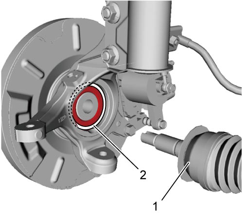

3A
| Front Drive Shaft Assembly Removal and Installation |
Removal
1)Hoist vehicle and remove front wheel.
2)Release caulking from drive shaft nut (1) and remove drive shaft nut with brake pedal depressed.

 "Expand image")
3)Drain transaxle oil or transfer oil.
•5 M/T model: 
•K14C-6M/T model:
•D16AA-6 M/T model:
•D16AA-twin clutch system model:
•4WD model:
•K14C-6M/T model:
•D16AA-6 M/T model:
•D16AA-twin clutch system model:
•4WD model:
4)Disconnect front stabilizer joint from strut.
5)Disconnect tie-rod end from steering knuckle.
6)Disconnect suspension arm joint from steering knuckle.
7)Using tire lever (1), pull out drive shaft joint (2) from transaxle, transfer or drive intermediate shaft.
NOTE:
Turning drive shaft while pulling out drive shaft may facilitate release of the snap ring fitting of joint spline.
 "Expand image")
| [A]: | Left side drive shaft (Petrol model) |
| [B]: | Left side drive shaft (Diesel model) |
| [C]: | Right side drive shaft (Petrol model) |
| [D]: | Right side drive shaft (Diesel – 2WD model) |
| [E]: | Right side drive shaft (Diesel – 4WD model) |
8)Remove drive shaft assembly.
Installation
NOTICE:
Failure to take proper precautions when installing the drive shaft may result in damage to or breakage of the drive shaft assembly.
•Before inserting drive shaft (1), check that there is no foreign material around encoder (2) on wheel bearing.
•Be careful not to damage the oil seals and boots when installing the drive shaft.
•Insert joints only by hand. Never hit joint boots with a hammer.
•Check that the differential side joint is fully inserted and the snap ring is seated in position.

 "Expand image")
•Insert joints only by hand. Never hit joint boots with a hammer.
•Check that the differential side joint is fully inserted and the snap ring is seated in position.
Reverse removal procedure noting the following points.
•Use new differential side joint snap ring.
•Tighten suspension arm joint nut to specified torque.
•Tighten front stabilizer bar joint nut to specified torque.
•Tighten new drive shaft nut to specified torque.
•Caulk drive shaft nut (1) as shown.
•Install front wheel.
•Fill transaxle or transfer with oil as specified:
•Tighten suspension arm joint nut to specified torque.
•Tighten front stabilizer bar joint nut to specified torque.
•Tighten new drive shaft nut to specified torque.
NOTICE:
Once the drive shaft nut (1) is removed, it will no longer have the necessary fastening performance.
Never reuse the drive shaft nut.
 "Expand image")
| 2. | Caulking part |
•Fill transaxle or transfer with oil as specified:
—5 M/T model:
•K14C-6M/T model:
—D16AA-6 M/T model:
—D16AA-twin clutch system model:
—4WD model:
•Check front wheel alignment. —D16AA-twin clutch system model:
—4WD model: